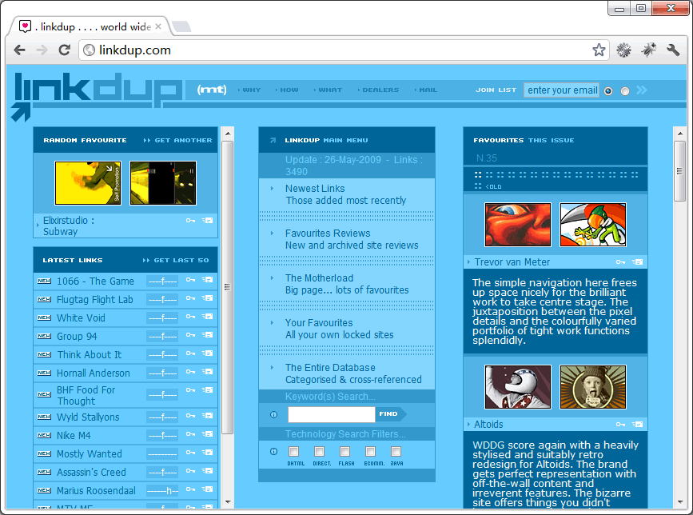
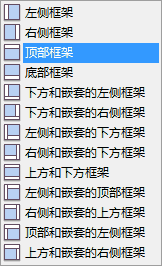
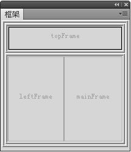
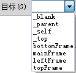
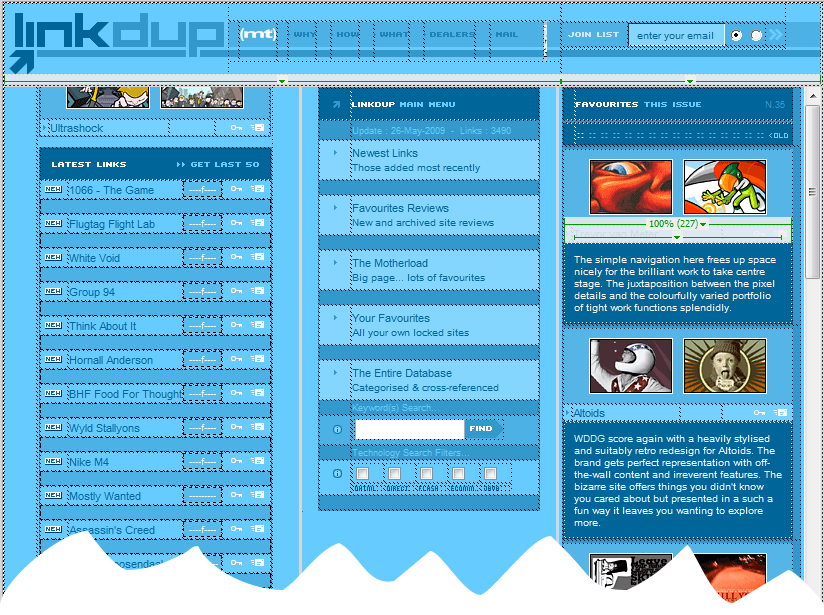

关于框架网页
框架网页认识
框架网页是一种多网页的结构，在同一个浏览器窗口中可展现多个网页，网页间可以通过超链接协同作用。
如上图的网页放在左右拆分的网页框架中：
| leftmenu.html | index.html |
framepage.html
框架网页的基本原理
- 所谓“框架”，就是将浏览器窗口划分为若干个区域；
- 框架网页并不是一个真正意义上的网页，它主要记录在框架网页中所包含的框架数量以及拆分方式等信息，每一个单独的框架将由具有实际内容的网页填充。
框架网页设计欣赏
框架与网页排版
网页排版分类
根据目前网页设计现况，以及在网络上能呈现的设计条件，可以把网页排版归类为三大类：
- 分栏式结构
- 区域排版
- 非规律的页面排版
分栏式结构和区域排版两种较常见，是网页设计架构的首选。
分栏式结构
分栏式结构也称为竖分栏。把页面从上到下分割为几列的设计结构。很容易通过框架实现。

导航栏下的网页区域为三分栏结构：
| nav.html | ||
| left.html | middle.html | index.html |
index.html
网页易读性的考虑，分栏数不宜超过5栏。
框架实现网页分栏
- 使用框架易实现网站导航，让网站的结构更加清晰；
- 框架用于网页分栏排版可使网站的风格一致；
- 框架与框架集构成了浏览器中所见的完整页面：
- 框架（Frame）：框架是浏览器窗口中的一个区域，对应于一个网页文件。
- 框架集（Frameset）：框架集也是一个网页文件，包含了对整个窗口拆分成框架的信息（区域位置、大小、对应的网页文件等）。
框架网页制作
框架集集成显示框架中的网页，但各网页是分别存放的。
- 菜单命令：文件->新建->示例中的页：框架页
- 插入面板：布局->框架 （见下图）
- 直接拖动：鼠标放到框架边框->双箭头光标时拖拽边框
|  | 此方法可用于在网页（一般网页或框架网页）中插入布局框架。
|
编辑框架网页
改变框架大小
用鼠标拖拽框架边框可随意改变框架大小。
删除框架
用鼠标把框架边框拖拽到父框架的边框上，可删除框架。
设置框架属性
设置框架属性时，必须先选中框架。
|
 |
注意：
- 框架是不可以合并的；
- 在创建链接时要用到框架名称，应给每个框架命名框架名。
在框架中使用超级链接
在框架式网页中制作超级链接时，一定要设置链接的目标属性。在导航条上创建链接时，一般将目标文档放在另一个框架中显示。
属性面板，“目标”菜单中的选项：
|
 |
练习：设计如下简单的左右框架网页。
框架网页制作实训
制作linkdup.com框架网页

依照linkdup的分栏改做“我的空间”个人网站
分栏建议与说明
嵌入式框架的制作
嵌入式框架即为iframe框架，它可以把一个网页的框架和内容嵌入到网页中。
插入iframe嵌入式框架
通过插入面板，插入->iframe
Html代码中将出现irame标签：<iframe></iframe>
说明：浏览器不支持页内框架时，会显示提示信息。如，“您的浏览器不支持页内框架，无法正常显示”。
iframe标签的主要属性
src—— 指定页内框架内要显示页面的URL。
width——设置页内框架的宽，取值是像素数或百分比。
height——设置页内框架的高，取值是像素数或百分比。
align——top|middle|bottom|left|right指定页内框架对齐方式
frameborder——1|0 指定是否显示页内框架的边框。
name ——指定页内框架的名称
scrolling——yes|no|auto 指定页内框架是否有滚动条
框架网页示例
用适当宽度的div，通过设置合适的margin使网页元素居中对齐。
关键点：
1、iframe除了尺寸外，需设置name值（如为content）；
2、链接打开的目标应设为框架的name值，这样链接页就可以框架中显示。
简易相册页制作
当点击小图时，利用iframe框架在同一个可视页面上显示大图。
设计要求
- 相册网页应图文并茂，作为个人网站中的一部分；
- 精心设计的文字样式与内容，与图片相响应；
- 用色雅致，版面简洁；
- 所有的设计需与网站整体风格相协调。
| Last | Home | Next |
©2012-2018 Yang Peili. All rights reserved. contact me